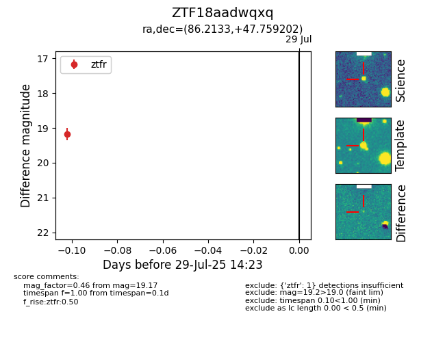

Target ZTF18aadwqxq at 2025-07-29 14:23, see:
FINK: fink-portal.org/ZTF18aadwqxq
Lasair: lasair-ztf.lsst.ac.uk/objects/ZTF18aadwqxq
ALeRCE: alerce.online/object/ZTF18aadwqxq
alt names
ZTF18aadwqxq (ztf,fink)
coordinates:
equatorial (ra, dec) = (86.2133,+47.75920)
galactic (l, b) = (163.7121,+9.56636)
photometry
last ztfr=19.17
1 ztfr detections
